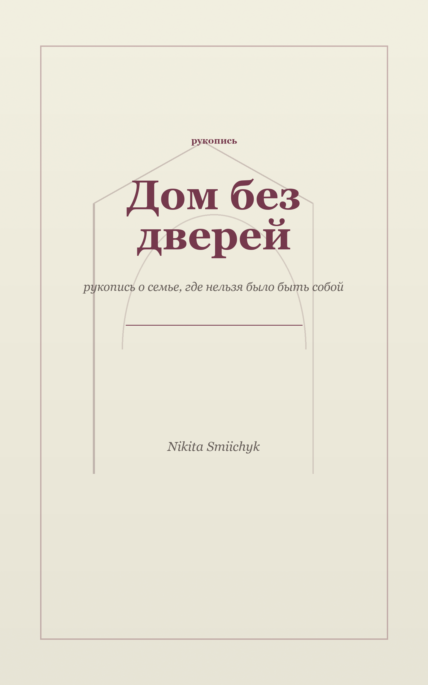

рукопись
Дом без дверей
рукопись о семье, где нельзя было быть собой
44 страницы о памяти, семейной системе и выходе из пространства, где роли были сильнее человека. Доступно как PDF для чтения в браузере и EPUB для читалок.

О книге
Это не медицинская книга и не попытка поставить диагноз. Это личная рукопись о том, как отдельные обрывки памяти наконец складываются в систему, которую можно назвать и оставить позади.
Эта книга собрана из обрывков памяти.
Главы
- Обрывки, которые наконец стали системой
- Арбуз, Наташин взгляд и слово «Люда»
- Семейный круг и остроумные шутки
- Дом без дверей
- Плечи как база
- Брат, которого били, и группа без него
- Тело без приватности
- Бедность, плесень и отсутствие «спасибо»
- Будущее, которое никогда не наступало
- Внешний мир как враг
- Мать, которая понимала и не защищала
- Сестра и слово «хватит»
- Учёба, пьедестал и любовь как доказательство
- Лето слова «токсичный»
- Выйди, пожалуйста, из комнаты
- Холодный дом и преследование через других
- После выхода тело не сразу понимает, что вышло
- Ирландия, где началась жизнь
- Почему я оборвала связь
- Когда старой системе нужны новые люди
- Ненормальная
Читать
PDF можно читать прямо на странице. EPUB сохранён рядом для телефона, планшета или электронной книги.
Никита
Личная рукопись о выходе из семейной системы и возвращении права быть собой.
Дом без дверей